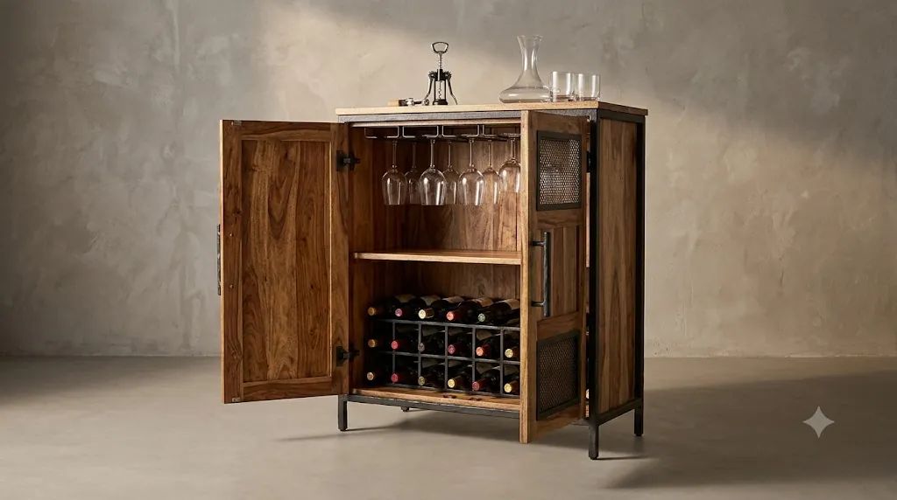

Industrial Bar Cabinet with Hanging Wine Glass Racks
Masterfully crafted in Jodhpur for high-volume international export, the Industrial Bar Cabinet with Hanging Wine Glass Racks reflects Home Entertaining sensibilities engineered for retail success at Crate & Barrel, Wayfair. Features Double-door cabinet with internal wine glass stemware holders and 16-bottle rack. Constructed exclusively from certified sustainable timber kiln-dried to strict 8–10% moisture equilibrium to prevent warping across diverse North American and European climates. Accompanied by electrostatically coated, corrosion-resistant ironwork with seamless hand-welded joins. Every piece is individually wrapped, buffered with high-density EPS edge guards, and boxed in an ISTA-1A drop-tested 5-ply export master carton (unit volume: 0.450 CBM). Fully compliant with the US Lacey Act, VRIKSH timber legality verification, and EUDR deforestation due diligence regulations.
| Material & construction | Double-door cabinet with internal wine glass stemware holders and 16-bottle rack |
|---|---|
| Dimensions | 34" x 18" x 42" / 86 x 46 x 107 cm |
| Carton volume | 0.450 CBM / unit |
| Minimum order | 15 Pcs |
| Lead time | 45–60 Days (FOB Mundra) |
| Western retail benchmark | $720 – $980 |
| Style | Home Entertaining |
| Indicative HS heading | 9403.60 — Other wooden furniture |
| Typical buyers | Crate & Barrel, Wayfair |
Indicative HS heading only — your customs broker confirms final classification. Kiln-dried 8–10% moisture, ISPM-15 dunnage, VRIKSH / Lacey / EUDR paperwork on request.